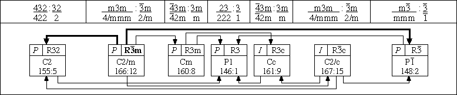
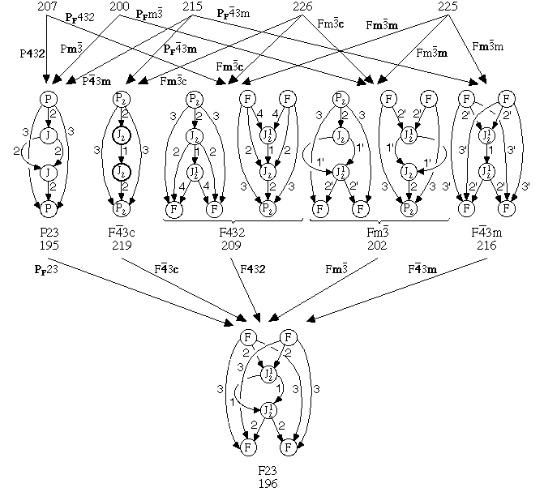

Crystallographic Topology 101
Crystallographic Topology 101

Cubic Space Groups
The 36 cubic crystallographic space groups are different from the remaining 194 space groups in that they each have body diagonal 3-fold axes arising from their tetrahedral and octahedral point groups. These body diagonal 3-fold axes make their orbifolds a less understood topology problem in that the Siefert fibered spaces approach of lifting from a base Euclidean 2-orbifold is inapplicable since fibration along the required orthogonal projections become tangled together by the 3-fold axes. On the other hand, many aspects of the cubic groups orbifolds are more straightforward than for the simpler space groups derived from cyclic and dihedral point groups.
Each cubic group has an index-4 rhombohedral based trigonal
subgroup and an index-3 orthorhombic or tetragonal subgroup. There are only
seven rhombohedral space groups: R3 (3),
R32 (32), R m and
Rc (m), R3m and R3c (3m), and
R () where the symbol in
parentheses is the corresponding trigonal point group. Thus it seemed a
reasonable approach to order the cubic groups in columns according to
their index-4 rhombohedral subgroups and in rows according to their
index-2 cubic subgroups. After some additional partitioning of Rm and Rc columns we arrived at the
subgroup graph shown in Fig 6.1. We thank John H. Conway of Princeton
for an e-mail exchange explaining his "odd-subroutine approach" to the
group classification problem which he has applied to a number of group
classification problems including the crystallographic space groups.
m and
Rc (m), R3m and R3c (3m), and
R () where the symbol in
parentheses is the corresponding trigonal point group. Thus it seemed a
reasonable approach to order the cubic groups in columns according to
their index-4 rhombohedral subgroups and in rows according to their
index-2 cubic subgroups. After some additional partitioning of Rm and Rc columns we arrived at the
subgroup graph shown in Fig 6.1. We thank John H. Conway of Princeton
for an e-mail exchange explaining his "odd-subroutine approach" to the
group classification problem which he has applied to a number of group
classification problems including the crystallographic space groups.
Fig. 6.1 uses the subgroup, group normalizer, and lattice complex information given in the International Tables for Crystallography, Volume A (ITCr) (Hahn, 1995). Each box contains the cubic space group symbol in the upper right subbox, the index-3 orthorhombic or tetrahedral subgroup in the middle, and their respective ITCr sequence numbers on the bottom line. The upper left subbox contains the simplest lattice complex of the cubic space group. Boldface type identifies group normalizers, and group normalizer basins are identified by bold solid lines leading down from cubic (but not orthorhombic) group normalizers.
The seven rhombohedral trigonal subgroups of the cubic groups are shown in the bottom row of the figure with their space group symbols and simplest lattice complex in the top row of each box. The index-3 subgroups (monoclinic/triclinic) of the rhombohedral groups are indicated on the middle line and the respective ITCr numbers on the bottom line of each box. The divider strip between the cubic and rhombohedral groups gives the point groups for all the groups involved in each column, with the cubic/orthorhombic (or tetragonal) to the left and the rhombohedral/monoclinic (or triclinic) to the right.


Two boxes in a row that are not separated by a space belong to a specific column. To minimize clutter in the drawing we use the convention that whenever a subgroup connection line goes to the midline separating adjacent boxes, both boxes are involved in the subgroup relation. If that line goes to another pair of adjoined boxes, the right goes to the right and the left to the left EXCEPT when there is a loop in the subgroup relation line, which indicates a right-left interchange. All solid lines join order-2 subgroups and pertain to the cubic, orthorhombic/tetragonal, rhombohedral, and monoclinic/triclinic sets of groups individually. We were previously unaware of that generalization, which suggests some classification possibilities. However, as detailed below, the orthorhombic space group set has some duplication.
The dashed lines leading to a dashed box two levels further down is an index-4 subgroup relationship. Note that each dashed box is a repeat of the regular box three levels up in the same column, reflecting the Bravais lattice repetition I, P, F, I, P which occurs in each column as denoted by the initial letters in the space group symbols. This relationship only holds for the cubic space groups in the figure and not for the orthorhombics/tetragonals. Since Fig. 6.1 is meant to be used mainly for orbifold applications, it does not include explicit information on how many unit cells are required for each space group/subgroup relationship.
Note that for order-2 subgroups, there are two independent cubic space
group families, one starting at Imm and ending at
F23, and the second starting at Iad and ending at
P213. The ending space groups are the only two cases of
space groups without order-2 subgroups. The two series are sometimes
called the
A and B cubic space group families, respectively. They show quite
different topological properties as indicated by their lattice complex
examples in the upper left subboxes. The orthorhombic analogues do not
have this property since there is a repetition of I41/acd
in the third and fourth rows, a
repetition of I4122 in the fourth and
fifth rows, and a repetition of I422 in the second and fourth rows,
which merge the orthorhombic/tetragonal set into one family.
The underlying topological spaces for the 36 cubic Euclidean 3-orbifolds listed in order along the seven rows of Fig. 6.1 are:
Row 1: D
Row 2: S, D, D, DP, D, PP, DP
Row 3: S, S, D, D, D, RP3, PP, D, PP, D, PP
Row 4: S, S, D, S, PP, PP, D, PP
Row 5: S, S, PP, PP
Row 6: S, S, S, PP
Row 7: S
with S, D, DP, PP and RP3 denoting S3, D3, D3 with single RP2 suspension, double RP2 suspension, and RP3, respectively. The covering 3-Euclidean orbifolds corresponding to the orthorhombic / tetragonal space groups in the same boxes have the same topological underlying spaces as their cubic counterparts except for the first two S3 entries in the 6th row which become the lens spaces L(4,1) and L(4,-1), and the single space group P212121 in the 7th row which produces a Euclidean 3-manifold with no singular set. The list of 10 (or 13) space groups without singular sets are listed below. The corresponding arbitrary notation used by Wolf (1984) is given in parentheses.
#1 P1 (G1); #4 P21 (G2); #144 P31 (G3) [enantiomer: #145 P32 (G3)]; #76 P41 (G4) [enantiomer: #78 P43 (G4)]; #169 P61 (G5) [enantiomer: #173 P65 (G5)]; #19 P212121 (G6); #7 Pb{Pc} (B1); #9 Bb{Cc} (B2); #29 Pca21 (B3); #33 Pna21 (B4)
Every Euclidean 3-orbifold has Euclidean 3-manifold covers derived from these space groups through subgroup relationships. Note that Table 6.1 contains G1, G6, and B2.
Color Group Representations of Group/Subgroup Pairs
Crystallographic color groups and the concept of antisymmetry are discussed in Appendix A. In the bicolor space groups, there are 1191 out of the total of 1651 group members that have mixed symmetry and antisymmetry group elements. In each of these 1191 groups, half of the geometrical symmetry elements have one color, say black, which represents regular crystallographic symmetry, and the remaining half have a second color, say white, which represents antisymmetry. Thus, the bicolor space groups are often called the black and white space groups.
In going from a space group to an index-2 normal subgroup in Fig 6.1, half of the symmetry operators are lost. The operators lost are the antisymmetry operators for a particular black and white space group which represent the group / normal subgroup space-group pair. If the subgroup has the same Bravais lattice as the parent group, antisymmetry is denoted only by (*)'s attached to generator element of the bicolor space group symbol. If the Bravais lattice changes, then the color space group also has a bicolor Bravais lattice denoted by a subscript attached to the Bravais lattice symbol.
To illustrate this use of the bicolor space groups, Tables 6.1 and 6.2
list all the cubic index-2 transformations of Fig. 6.1 using both the
regular crystallographic space group symbols and the bicolor symbols.
Table 6.1 gives the transformations that preserve the Bravais
lattice. In these cases, there must be a change in the
crystallographic point group to an index-2 subgroup. For example
229 Imm connects to 220 I 3m
via the black-white
space group Im*m while changing the point group
from mm for Imm
to 3m for
I3m. Table 6.2 gives all the remaining
transformations which
preserve the point group but change the Bravais Lattice. For example
229 Imm connects to 221 Pmm via
the black-white space group IPmm. Such
tables provide a structured computational
mechanism for constructing group-subgroup graphs
such as Fig. 6.1.
The color group names also provide convenient labels for the links
of related transformations in critical net orbifold graphs as
illustrated in Fig. 6.2.
3m
via the black-white
space group Im*m while changing the point group
from mm for Imm
to 3m for
I3m. Table 6.2 gives all the remaining
transformations which
preserve the point group but change the Bravais Lattice. For example
229 Imm connects to 221 Pmm via
the black-white space group IPmm. Such
tables provide a structured computational
mechanism for constructing group-subgroup graphs
such as Fig. 6.1.
The color group names also provide convenient labels for the links
of related transformations in critical net orbifold graphs as
illustrated in Fig. 6.2.
(Point Group = --- xx ---)
| (Space Gr) | Bicolor Space Group [Subgroup] | |||||
|---|---|---|---|---|---|---|
| ---- m ---- |
----------- 23 ----------- | |||||
| (200 Pm) | Pm* | [195 P23] | ||||
| (201 Pn) | Pn* | [195 P23] | ||||
| (202 Fm) | Fm* | [196 F23] | ||||
| (203 Fd) | Fd* | [196 F23] | ||||
| (204 Im) | Im* | [197 I23] | ||||
| (205 Pa) | Pa* | [198 P213] | ||||
| (206 Ia) | Ia* | [199 I213] | ||||
| ---- 432 ---- | ----------- 23 ----------- | |||||
| (207 P432) | P4*32* | [195 P23] | ||||
| (208 P4232) | P42*32* | [195 P23] | ||||
| (209 F432) | F4*32* | [196 F23] | ||||
| (210 F4132) | F41*32* | [196 F23] | ||||
| (211 I432) | I4*32* | [197 I23] | ||||
| (212 P4332) | P43*32* | [198 P213] | ||||
| (213 P4132) | P41*32* | [198 P213] | ||||
| (214 I4132) | I41*32* | [199 I213] | ||||
| --- 3m --- |
----------- 23 ----------- | |||||
| (215 P3m) | P*3m* | [195 P23] | ||||
| (216 F3m) | F*3m* | [196 F23] | ||||
| (217 I3m) | I*3m* | [197 I23] | ||||
| (218 P3n) | P*3n* | [195 P23] | ||||
| (219 F3c) | F*3c* | [196 F23] | ||||
| (220 I3d) | I*3d* | [199 I213] | ||||
| --- mm --- |
--------- 3m --------- |
--------- m --------- |
---------- 432 ---------- | |||
| (221 Pmm) | Pm*m | [215 P3m] | Pmm* | [200 Pm] | Pm*m* | [207 P432] |
| (222 Pnn) | Pn*n | [218 P3n] | Pnn* | [201 Pn] | Pn*n* | [207 P432] |
| (223 Pmn) | Pm*n | [218 P3n] | Pmn* | [200 Pm] | Pm*n* | [208 P4232] |
| (224 Pnm) | Pn*m | [215 P3m] | Pnm* | [201 Pn] | Pn*m* | [208 P4232] |
| (225 Fmm) | Fm*m | [216 F3m] | Fmm* | [202 Fm] | Fm*m* | [209 F432] |
| (226 Fmc) | Fm*c | [219 F3c] | Fmc* | [202 Fm] | Fm*c* | [209 F432] |
| (227 Fdm) | Fd*m | [216 F3m] | Fdm* | [203 Fd] | Fd*m* | [210 F4132] |
| (228 Fdc) | Fd*c | [219 F3c] | Fdc* | [203 Fd] | Fd*c* | [210 F4132] |
| (229 Imm) | Im*m | [217 I3m] | Imm* | [204 Im] | Im*m* | [211 I432] |
| (230 Iad) | Ia*d | [220 I3d] | Iad* | [206 Ia] | Ia*d* | [214 I4132] |
(Point Group = --- xx ---)
| (Space Gr) | Bicolor Space Group [Subgroup] | |||
|---|---|---|---|---|
| ----- 23 ----- | ||||
| (195 P23) | PF23 | [196 F23] | ||
| (197 I23) | IP23 | [195 P23] | ||
| (199 I213) | IP213 | [198 P213] | ||
| ---- m ---- | ||||
| (200 Pm) | PFm | [202 Fm] | ||
| (201 Pn) | PFn | [203 Fd] | ||
| (204 Im) | IPm | [200 Pm] | IPm* | [201 Pn] |
| (206 Ia) | IPa | [205 Pa] | ||
| ---- 432 ---- | ||||
| (207 P432] | PF432 | [209 F432] | ||
| (208 P4232) | PF4232 | [210 F4132] | ||
| (211 I432) | IP432 | [207 P432] | IP4*32* | [208 P4232] |
| (214 I4132) | IP4132 | [212 P4332] | IP41*32* | [213 P4132] |
| --- 3m --- | ||||
| (215 P3m) | PF3m | [216 F3m] | PF*3m* | [219 F3c] |
| (217 I3m) | IP3m | [215 P3m] | IP*3m* | [218 P3n] |
| --- mm --- | ||||
| (221 Pmm) | PFmm | [225 Fmm] | PFmm* | [226 Fmc] |
| (224 Pnm) | PFnm | [227 Fdm] | PFnm* | [228 Fdc] |
| (229 Imm) | IPmm | [221 Pmm] | IPm*m | [224 Pnm] |
| IPmm* | [223 Pmn] | IPm*m* | [222 Pnn] | |
Primitive Cubic and NaCl Family
The general notes following Fig. 5.1 also apply to Fig. 6.2.
The symbol along each group-to-subgroup arrow denotes the bicolor
(Shubnikov) space group symbol describing, by use of bold face
characters, which generators in the bicolor space group are
antisymmetry operators. Antisymmetry, which is discussed in Appendix
A, characterizes the required reduction of symmetry needed to form the
subgroup. The cubic space group symbol Pmm, which
is shorthand for P4/m2/m, tells us the group is
generated using a primitive Bravais lattice, P, a mirror, m,
perpendicular to the 4-axis along [010], a axis along [-11-1], and a mirror, m, perpendicular to a
2-fold axis along [0-11]. Since only even order axes can be
antisymmetric, an odd-order (i.e., 3 or ) axis is
never antisymmetric; thus only the Bravais lattice P and the two m's
generators in Pmm can become antisymmetric. Any
time a bicolor symbol character is antisymmetric (bold), the
corresponding character in the subgroup symbol is reduced or
eliminated. For example Pmm becomes
P432, while Pmm becomes Pm as shown in Fig. 6.2. The symbol PF denotes
a colored Bravais lattice. Note that all index-2 subgroups have either
the same point group or the same Bravais lattice as the parent group
as described above.
The colored Bravais lattice symbol specifies the change in Bravais
lattice.
Other details associated with Fig. 6.2.
Cubic Lattice Complexes on Critical Nets on Orbifolds
In our illustration of lattice complexes on critical nets in cubic
space group/subgroup graphs, we show:
Page last revised: June 25, 1996

Figure 6.2. Primitive Cubic and NaCl Critical Nets Superimposed
onto Cubic Space Group Orbifolds.
Thus we have illustrated the cubic A-family. The B-family gets more
complex, as will be shown at a future time. Just to get some flavor of
what lies past the cubics, we will also briefly examine the seven
rhombohedral space groups and a few of the orthorhombic space groups
listed in Fig. 6.1.
m
with critical net peaks on lattice complex I,
m
with critical net peaks on lattice complex F,
m
with critical net peaks on lattice complex D, and
m
with critical net peaks on lattice complex P.
 Appendix A. Subgroup Families from Color Groups
Appendix A. Subgroup Families from Color Groups
 5. Lattice Complexes on Critical Nets on Orbifolds
5. Lattice Complexes on Critical Nets on Orbifolds
 Crystallographic Topology Home Page
Crystallographic Topology Home Page